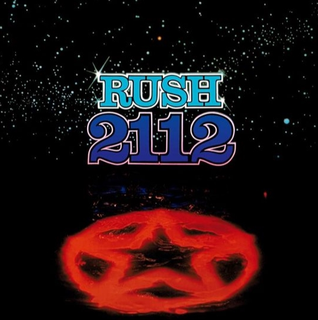

2112 by Rush is concept album from 1976. It was the 4th studio album from the band.
The record company demanded short radio friendly songs. Tour dates were declining and they were playing to
smaller
and smaller crowds. They referred to it as the down the tubes
tour. The band decided to go out with a
bang,
assuming this would be the last record, and create the music they wanted. Side one is a twenty minute suite, far
longer than radio stations would play.
Rush is a three member Canadian band. Alex Lifeson and Geddy Lee were friends from junior high on. Neil Peart was the second drummer. An extremely intelligent and well read man, he took over the writing of lyrics. All three musicians are considered to be among the best in the world at their craft. Neil Peart passed away last month after a long battle with brain cancer.
The story is set in the distant future (2112) in the city of Megadon. It is based on the novella Anthem by Ayn Rand. The world is controlled by a group of priests. Creativity and individuality are outlawed. Our hero stumbles upon a stringed instrument and is in awe of the beauty of music. He wishes to share it with others and brings it before the priests. They don't agree. I won't give away ending.
This side is the 20 minute suite. Though not radio friendly, the first movement is often heard on the radio. The songs create a wide array of emotions, reflecting the story they are telling.
Perhaps the most memorable quote from the story And the meek shall inherit the earth
, the first words that
are sung.
Side two does contain some shorter tracks. The meanings of some songs are left up to the consumer (some more obvious than others) but Twilight Zone is an obvious tribute to the bands love of that show.